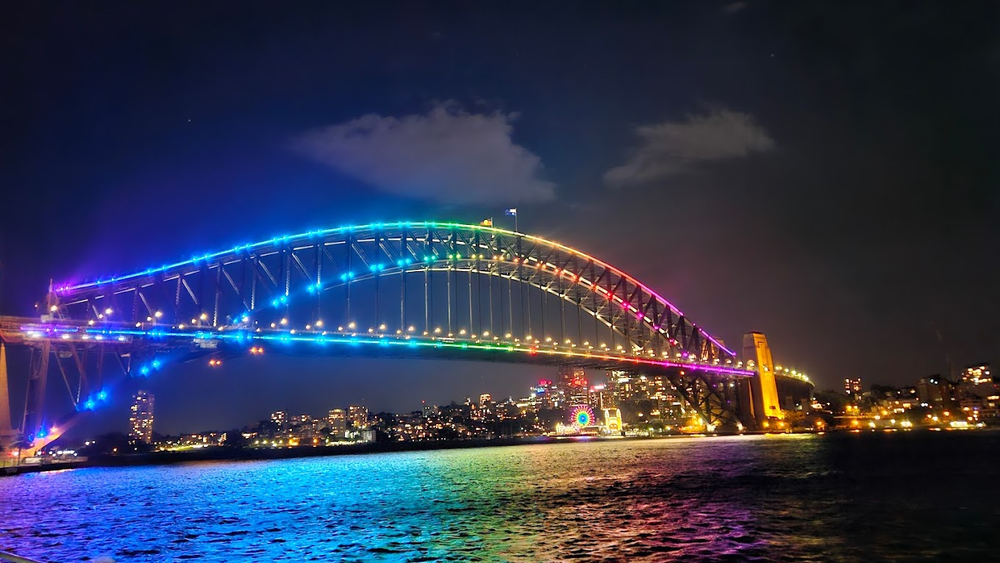
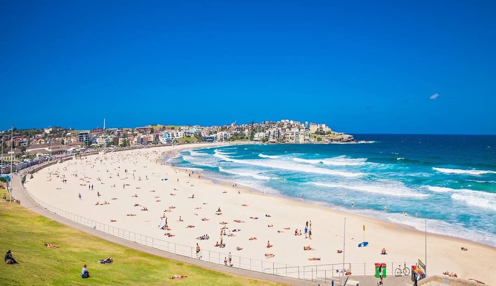
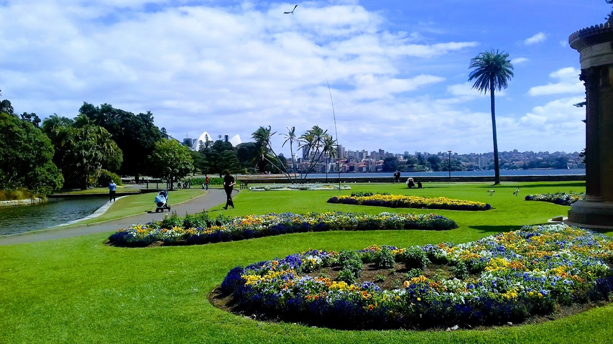

Sydney Opera House
The Sydney Opera House is more than just an architectural marvel set
on beautiful Sydney Harbour, it's also a world-class working opera
house. The iconic sails host more than 1,600 performances a year –
everything from classical ballet performances, innovative theatre and
symphony music to contemporary dance and, of course, stunning opera
productions. The UNESCO World Heritage-listed building offers daily
guided tours, available in English, Mandarin, French, German,
Japanese, Korean and Spanish. Meanwhile, Opera Bar has the best view
in town, letting you sip cocktails as you marvel at the Sydney Harbour
Bridge. You’ll treasure the same views dining alfresco at the adjacent
House Canteen.
Sydney Opera House

Sydney Harbor Bridge
The Sydney Harbour Bridge is one of the world’s most recognisable
landmarks. Not only is it the largest steel arch bridge on the planet,
but it also spans one of the globe’s finest natural harbours.
Affectionately named the ‘Coathanger’ by locals, it’s an intrinsic
part of the city; you can walk or cycle across it and even climb to
its peak for incredible views.
Sydney Harbor Bridge

Bondi Beach
Sparkling blue ocean, funky eateries and a laid-back beach lifestyle
sum up the world-famous Bondi. Go for a swim in an iconic ocean pool
at Icebergs, sip a fruity cocktail at a beachside bar like Hotel
Ravesis, learn to ride the waves with the experts at Let’s Go Surfing
or peruse the Saturday farmer’s markets. Of course, the Bondi to
Coogee Coastal Walk is a memorable way to appreciate the beauty of the
area. The picturesque 6km track is carved into sandstone cliffs and
offers uninterrupted views of the ocean, passing Tamarama Beach and
Bronte Beach, before finishing in beautiful Coogee. Throughout October
and November, you will also be able to view the world’s biggest annual
free outdoor sculpture exhibition – Sculpture by the Sea – along the
route.
Bondi Beach

Royal Botanic Garden
An oasis of 30 hectares in the heart of the city, the Royal Botanic
Garden occupies one of Sydney’s most spectacular positions: wrapping
around the harbour and sitting adjacent to the Sydney Opera House.
With a long history dating back to 1816, it is home to an outstanding
collection of plants from Australia and overseas. Enjoy a stroll, pack
a picnic lunch, join a free guided tour (the Aboriginal Heritage Tour
is a highlight) or come for one of the many memorable events held in
the lush antipodean-accented parklands.
Royal Botanic Garden
